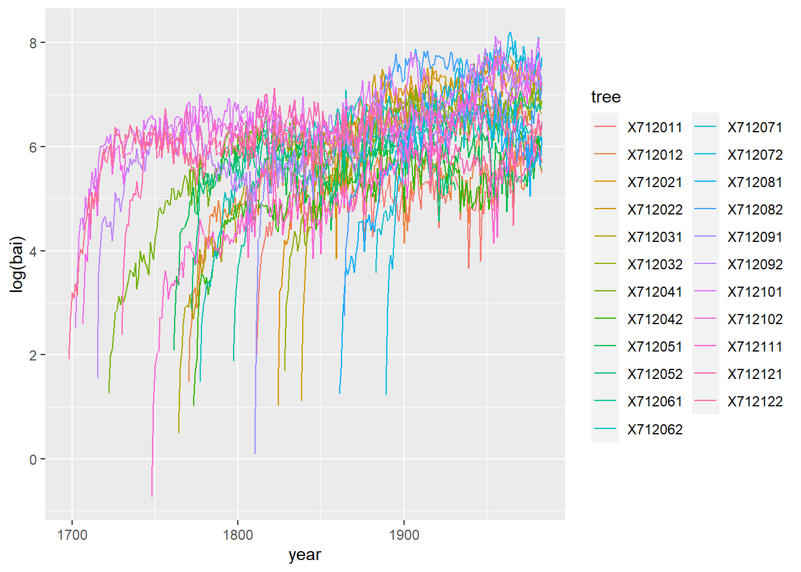
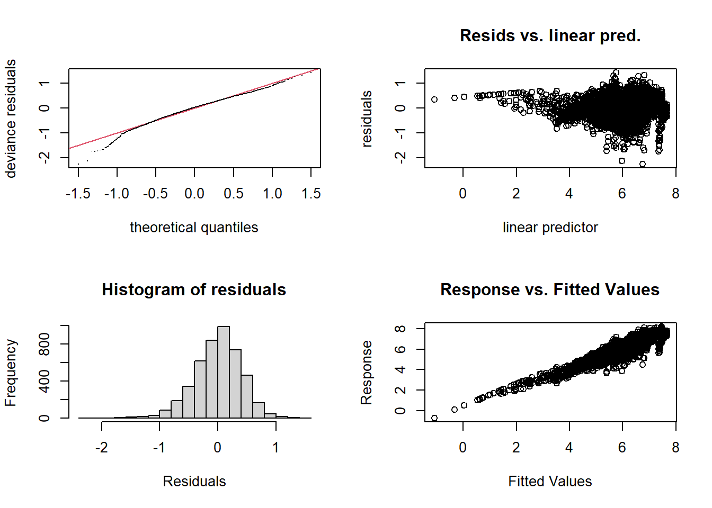
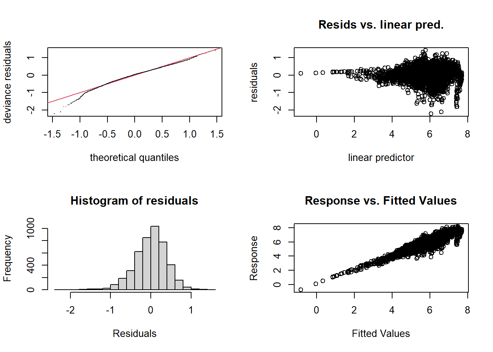
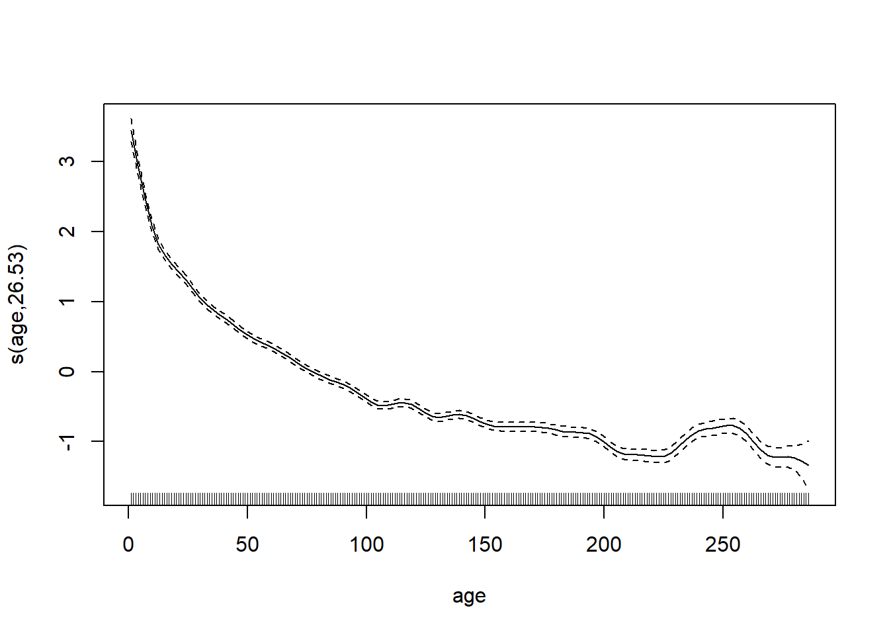
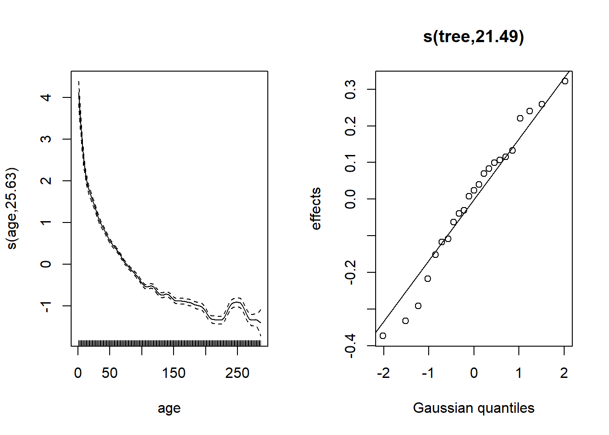
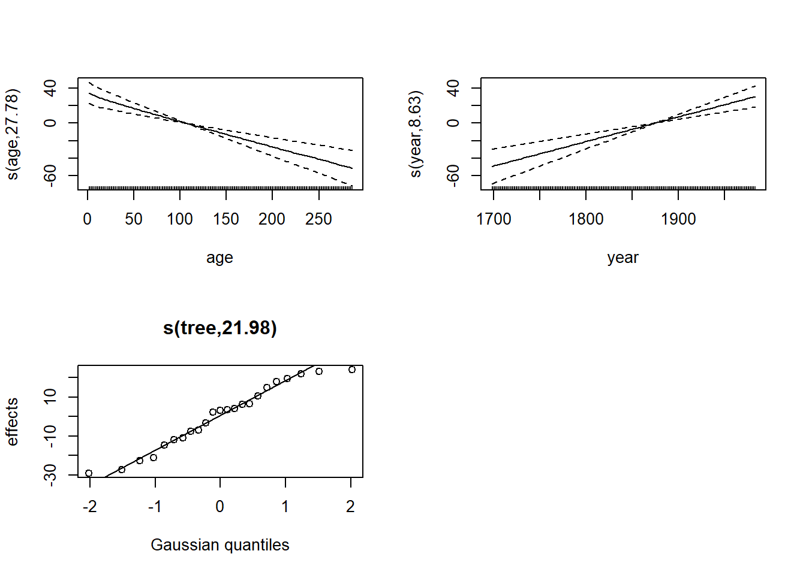
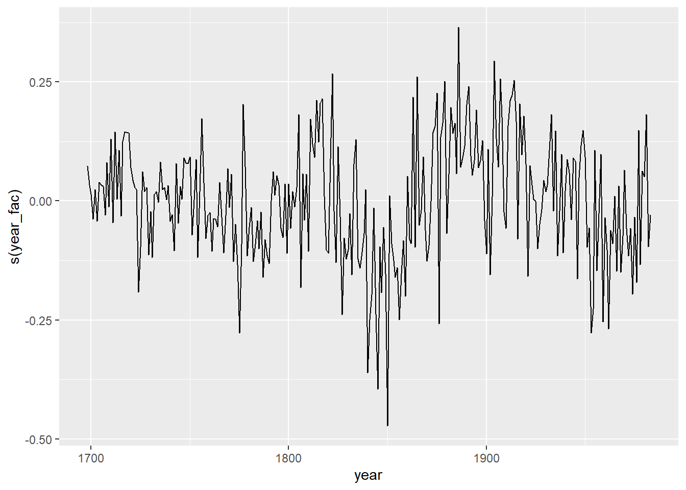

Modèles additifs généralisés - Exercices en classe - Solutions
Données
Le fichier dendro_wa082.csv, basé sur le jeu de données wa082 inclus dans le package dplR, contient des séries dendrochronologiques de 23 sapins gracieux (Abies amabilis) échantillonnés dans l’état du Washington (nord-ouest américain). La première colonne représente l’année et chaque autre colonne représente la croissance annuelle de la surface terrière d’un arbre, telle que déterminée par les cernes de croissance. Les valeurs manquantes NA représentent des années antérieures à la formation du premier cerne de l’arbre.
wa <- read.csv("../donnees/dendro_wa082.csv")
wa[1:5, 1:8]## year X712011 X712012 X712021 X712022 X712031 X712032 X712041
## 1 1698 NA NA NA NA NA NA NA
## 2 1699 NA NA NA NA NA NA NA
## 3 1700 NA NA NA NA NA NA NA
## 4 1701 NA NA NA NA NA NA NA
## 5 1702 NA NA NA NA NA NA NA1. Préparation des données
- Utilisez la fonction
pivot_longerdu package tidyr pour transformerwaen un tableau avec trois colonnes: l’année, l’arbre et la croissance.
Solution
library(tidyr)
wa <- pivot_longer(wa, cols = c(-year), names_to = "tree", values_to = "bai",
values_drop_na = TRUE)
head(wa)## # A tibble: 6 x 3
## year tree bai
## <int> <chr> <dbl>
## 1 1698 X712122 6.79
## 2 1699 X712122 15.3
## 3 1700 X712122 24.3
## 4 1701 X712122 21.9
## 5 1702 X712101 12.4
## 6 1702 X712122 28.9- Ajoutez des colonnes pour représenter l’âge et la surface terrière (croissance cumulative) correspondant à chaque paire arbre-année. Avec le package dplyr, vous pouvez trier les données par arbre et année, grouper les données par arbre, puis calculer l’âge avec
row_numberet la surface terrière aveccumsum(somme cumulative).
Solution
library(dplyr)
wa <- arrange(wa, tree, year) %>%
group_by(tree) %>%
mutate(age = row_number(), ba = cumsum(bai))
head(wa)## # A tibble: 6 x 5
## # Groups: tree [1]
## year tree bai age ba
## <int> <chr> <dbl> <int> <dbl>
## 1 1811 X712011 7.35 1 7.35
## 2 1812 X712011 19.2 2 26.6
## 3 1813 X712011 32.3 3 58.9
## 4 1814 X712011 48.6 4 108.
## 5 1815 X712011 58.5 5 166.
## 6 1816 X712011 67.4 6 233.- Illustrez les séries de croissance de chaque arbre. Il est recommandé de représenter le logarithme de la croissance en surface terrière.
Solution
library(ggplot2)
ggplot(wa, aes(x = year, y = log(bai), color = tree)) +
geom_line()
2. Croissance en fonction de l’âge et de la surface terrière
La croissance annuelle d’un arbre dépend de facteurs intrinsèques (ex.: âge et taille actuelle de l’arbre) et extrinsèques, notamment les conditions climatiques. Afin d’isoler l’effet du climat sur la croissance, il est donc nécessaire de retirer des séries de croissance la tendance due à l’âge et la taille de chaque arbre. Nous utiliserons ici un GAM pour estimer cette tendance, avec une forme du modèle semblable à celle proposée dans l’étude de Girardin et al. (2016).
- Ajustez un modèle additif avec la formule
log(bai) ~ log(ba) + s(age), où bai (basal area increment) est la croissance en surface terrière de l’année et ba est la surface terrière. Assurez-vous que le paramètre \(k\) de la spline est assez élevé. Comment interprétez-vous le coefficient delog(ba)? Comment décrivez-vous (brièvement) l’effet de l’âge?
Solution
library(mgcv)
wa_gam <- gam(log(bai) ~ log(ba) + s(age), data = wa)
gam.check(wa_gam)
##
## Method: GCV Optimizer: magic
## Smoothing parameter selection converged after 8 iterations.
## The RMS GCV score gradient at convergence was 3.33104e-07 .
## The Hessian was positive definite.
## Model rank = 11 / 11
##
## Basis dimension (k) checking results. Low p-value (k-index<1) may
## indicate that k is too low, especially if edf is close to k'.
##
## k' edf k-index p-value
## s(age) 9.00 8.97 0.94 <2e-16 ***
## ---
## Signif. codes: 0 '***' 0.001 '**' 0.01 '*' 0.05 '.' 0.1 ' ' 1Le test diagnostic de \(k\) donne un résultat significatif avec un edf proche du \(k\) choisi. Dans ce cas, il est utile d’augmenter la valeur de \(k\) suffisamment pour que le test ne soit plus significatif.
wa_gam <- gam(log(bai) ~ log(ba) + s(age, k = 30), data = wa)
gam.check(wa_gam)
##
## Method: GCV Optimizer: magic
## Smoothing parameter selection converged after 7 iterations.
## The RMS GCV score gradient at convergence was 8.075291e-07 .
## The Hessian was positive definite.
## Model rank = 31 / 31
##
## Basis dimension (k) checking results. Low p-value (k-index<1) may
## indicate that k is too low, especially if edf is close to k'.
##
## k' edf k-index p-value
## s(age) 29.0 26.5 0.99 0.15plot(wa_gam, pages = 1)
Le taux de croissance diminue avec l’âge de l’arbre.
- Ajoutez maintenant un effet aléatoire de l’arbre sur l’ordonnée à l’origine du modèle en (a). Vérifiez l’ajustement du modèle, incluant la normalité des effets aléatoires. Quelle est la fraction de la variance de
log(bai)expliquée par ce modèle?
Solution
wa$tree <- as.factor(wa$tree)
wa_gam <- gam(log(bai) ~ log(ba) + s(age, k = 30) + s(tree, bs = "re"), data = wa)
gam.check(wa_gam)
##
## Method: GCV Optimizer: magic
## Smoothing parameter selection converged after 11 iterations.
## The RMS GCV score gradient at convergence was 5.633129e-07 .
## The Hessian was positive definite.
## Model rank = 54 / 54
##
## Basis dimension (k) checking results. Low p-value (k-index<1) may
## indicate that k is too low, especially if edf is close to k'.
##
## k' edf k-index p-value
## s(age) 29.0 27.6 1.06 1
## s(tree) 23.0 21.7 NA NAExcepté pour la partie à gauche de -0.6 sur l’axe des \(x\), les résidus suivent à peu près une distribution normale.
plot(wa_gam, pages = 1)
Les effets aléatoires s’éloignent un peu de la normale pour les valeurs les plus petits (en bas à gauche).
summary(wa_gam)##
## Family: gaussian
## Link function: identity
##
## Formula:
## log(bai) ~ log(ba) + s(age, k = 30) + s(tree, bs = "re")
##
## Parametric coefficients:
## Estimate Std. Error t value Pr(>|t|)
## (Intercept) -4.6166 0.1883 -24.52 <2e-16 ***
## log(ba) 1.0698 0.0181 59.12 <2e-16 ***
## ---
## Signif. codes: 0 '***' 0.001 '**' 0.01 '*' 0.05 '.' 0.1 ' ' 1
##
## Approximate significance of smooth terms:
## edf Ref.df F p-value
## s(age) 27.59 28.76 73.96 <2e-16 ***
## s(tree) 21.69 22.00 51.27 <2e-16 ***
## ---
## Signif. codes: 0 '***' 0.001 '**' 0.01 '*' 0.05 '.' 0.1 ' ' 1
##
## R-sq.(adj) = 0.872 Deviance explained = 87.4%
## GCV = 0.12806 Scale est. = 0.12661 n = 4536Selon le \(R^2\) ajusté, environ 87% de la variance de croissance en surface terrière est expliquée par ce modèle.
- Comparez deux façons d’inclure la variation de la croissance d’une année à l’autre au modèle en (b): (1) une spline selon l’année (considérée comme variable numérique) ou (2) un effet aléatoire de l’année (considérée comme facteur) sur l’ordonnée à l’origine du modèle. Quelles sont les différences entre les suppositions des deux versions du modèle?
Solution
wa$year_fac <- as.factor(wa$year)
wa_gam2 <- gam(log(bai) ~ log(ba) + s(age, k = 30) + s(year) +
s(tree, bs = "re"), data = wa)
plot(wa_gam2, pages = 1)
wa_gam3 <- gam(log(bai) ~ log(ba) + s(age, k = 30) + s(year_fac, bs = "re") +
s(tree, bs = "re"), data = wa)
plot(wa_gam3, pages = 1)
Le terme s(year) indique que la croissance moyenne varie de façon continue et non-linéaire selon l’année du cerne, donc elle ne peut pas varier “abruptement” d’une année à la suivante.
Un effet aléatoire de l’année (prise comme facteur) signifie que les variations inter-annuelles proviennent d’une distribution normale, mais il n’y a pas de contrainte selon laquelle que les années proches l’une de l’autre aient un effet semblable.
- Avec la fonction
predict(..., type = "terms"), nous pouvons obtenir la contribution de chaque terme du modèle à la réponse prédite. Utilisez cette méthode pour illustrer les effets aléatoires de l’année estimés pour le deuxième modèle en (c).
Solution
wa_pred <- as.data.frame(predict(wa_gam3, type = "terms"))
head(wa_pred)## log(ba) s(age) s(year_fac) s(tree)
## 1 2.154846 4.318109 0.16692648 -0.09191234
## 2 3.543452 4.082687 0.11482261 -0.09191234
## 3 4.401851 3.848813 0.08749526 -0.09191234
## 4 5.051727 3.618789 0.20494460 -0.09191234
## 5 5.521118 3.395505 0.11918325 -0.09191234
## 6 5.889021 3.182077 0.19920168 -0.09191234wa_pred$year <- wa$year
ggplot(wa_pred, aes(x = year, y = `s(year_fac)`)) +
geom_line()
Références
Girardin, M.P. et al. (2016) No growth stimulation of Canada’s boreal forest under half-century of combined warming and CO2 fertilization. PNAS 113, E8406-E8414.